| We had a family trip planned for the end of
June with 4 other family members, but it fell through for everyone but
us. We continued on and had a nice time together. We camped
near Hungry Horse, MT as the half-way point - 2 hours from home and 2
hours from Many Glacier, our ultimate destination. |
|
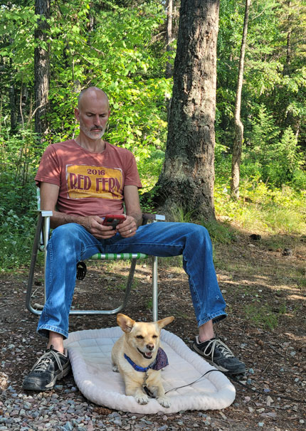 |
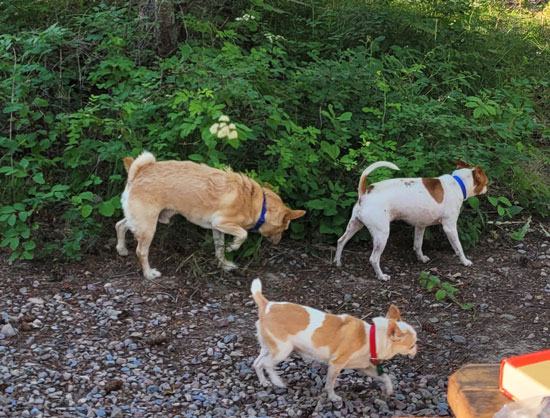 A visit from the neighbor dogs, in which they pooped on Buddy's territory. How rude! |
| Eric, wearing his "happy camper" face. Buddy is actually enjoying himself. | |
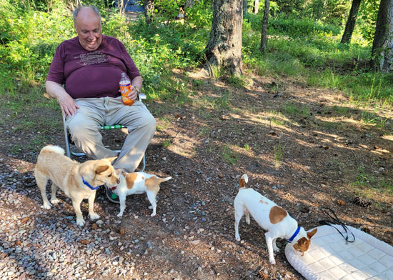 |
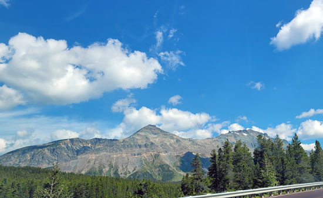 The next morning, we're on our drive near Essex, going below Glacier park to get to the East side. |
| Uncle Timmy came out for the evening. Buddy is NOT best pleased with this dog near his bed. | |
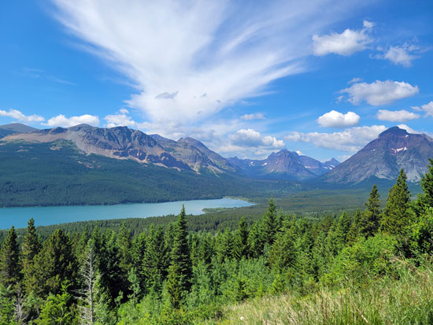 It was about 90 minutes into our 2-hour drive when I realized that I'd
forgotten my hiking shoes |
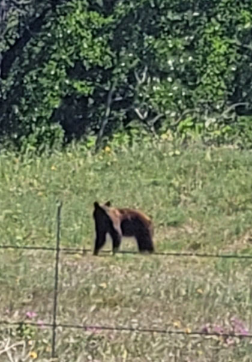 |
| Bear sighting along the way, we couldn't get a very good photo. He looks skinny! | |
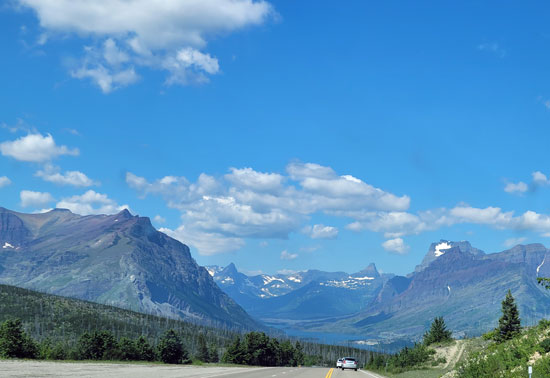 |
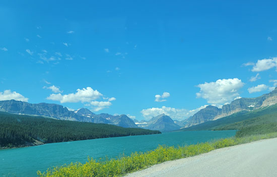 |
| Beautiful views on the east side of Glacier Park. | Heading into the Many Glacier area, so pretty! |
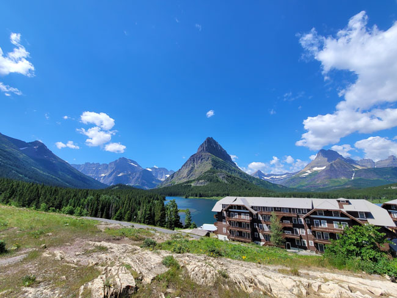 |
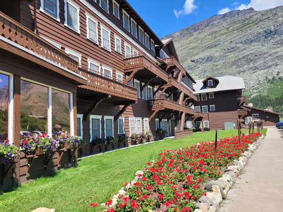 |
| Many Glacier lodge, looking gorgeous in front of Swiftcurrent Lake | The flowers were in fine form. |
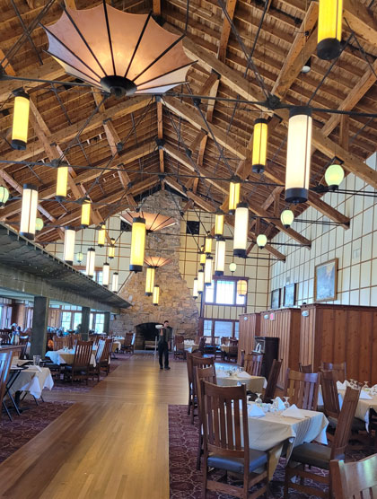 |
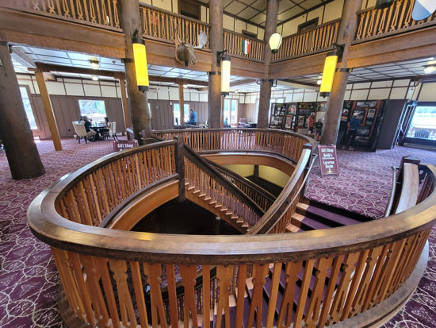 The lobby area, complete with trees to hold up the 2nd floor and a beautiful curved staircase. |
| The beautiful dining area where we enjoyed lunch with a view of the lake. | |
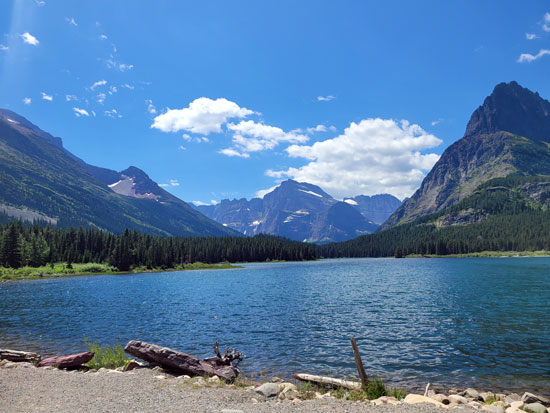 |
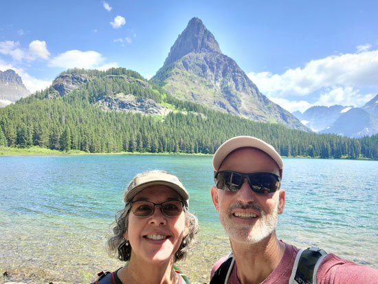 |
| Swiftcurrent Lake | Casazzas, ready for a hike. Ignore my crazy eye! |
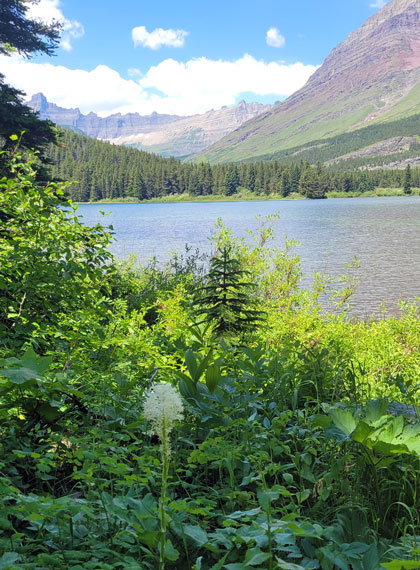 |
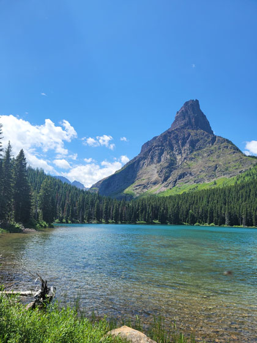 |
| Bear grass! Always a highlight for me. | Beautiful. |
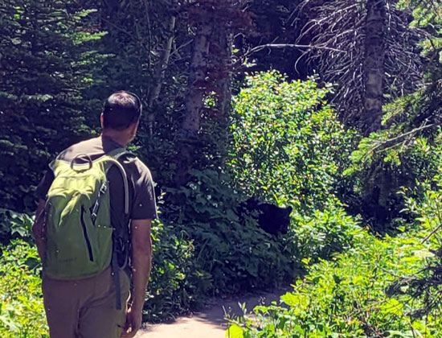 We encountered a bear that had traffic on the trail all backed
up. At first the bear was just This made the bear decide to go back into the woods, and the hikers to progress on safely. |
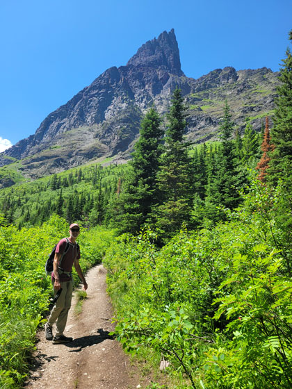 |
| Here we are, far from the crowds. We hardly saw any other hikers in this area. | |
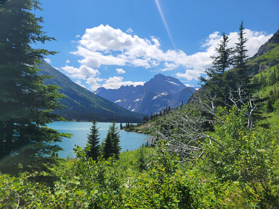 |
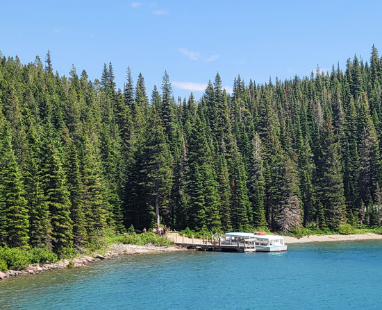 |
| The tip of Swiftcurrent Lake
|
Instead of doing this hike, you can take a ferry ride to get within 1 mile
of Grinnell Lake, our primary destination. Two boats are involved, you have to make a quarter mile hike between the two boats because you're crossing two different lakes. |
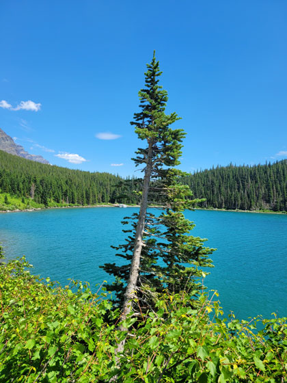 |
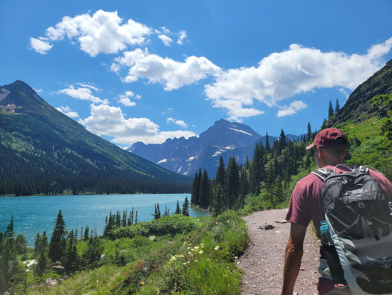 The hiking views don't get much better than this! |
| Lake Josephine, the second lake along the trail from the lodge. | |
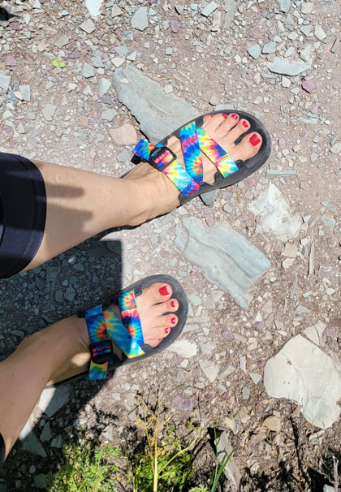 |
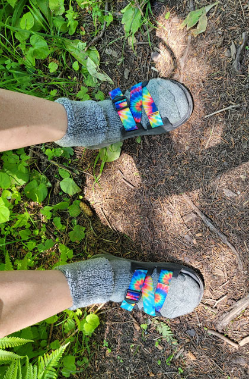 |
| You might remember that I had forgotten to bring my hiking shoes that morning. Eric kept offering to trade me shoes, but I didn't want him to suffer for my stupidity. |
Finally, after I had at least 3 big blisters going, I asked him if I could
take his socks. That helped a bit, and that way we both ended up with blisters. Plus, I looked awesome. |
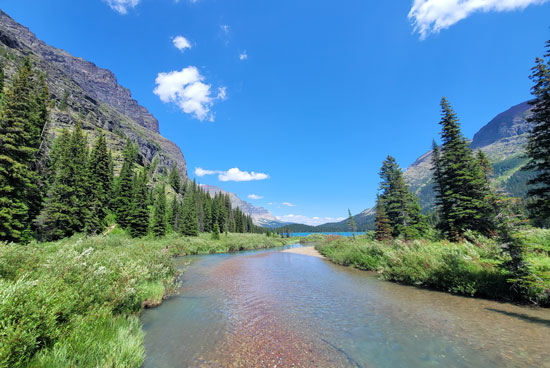 |
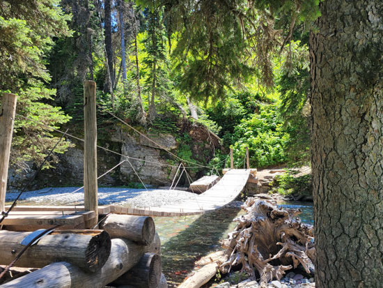 |
| At the tip of Lake Josephine, where Grinnell Creek comes in. | A cute little swinging bridge over Cataract Creek. |
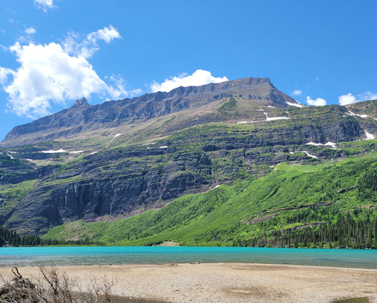 |
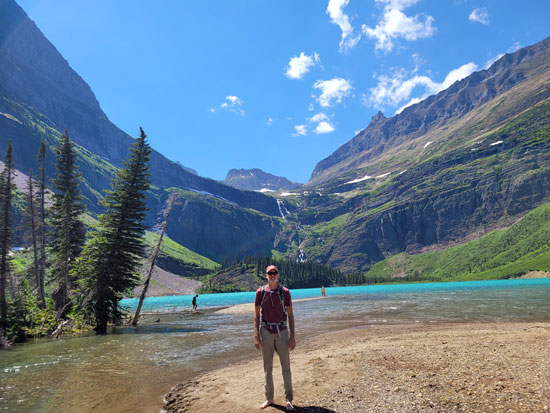 |
| Our first sight of Grinnell Lake, a beautiful, clear, glacier-fed lake. | Eric, with Grinnell Lake and the falls behind him. |
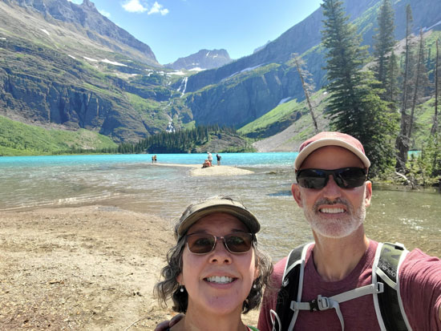 Casazzas at Grinnell Lake |
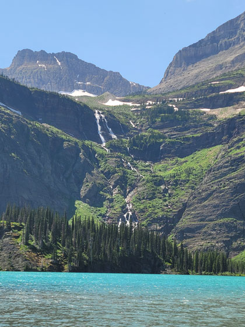 |
| Close-up of the falls at the end of the lake. There is Grinnell
Glacier up above these falls, but that was an 11-mile hike, too far for us! |
|
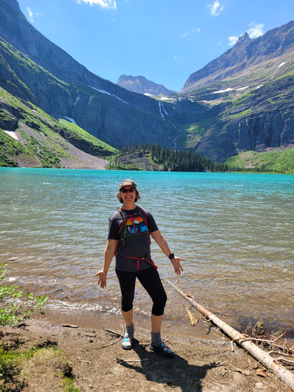 |
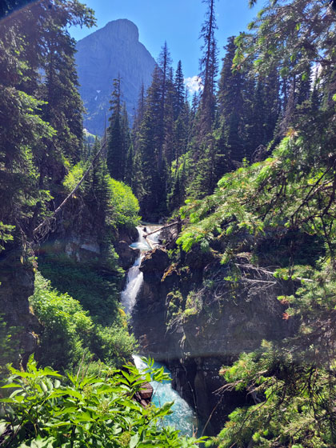 |
| Me, rockin' my socks 'n slides footwear. |
This was Hidden Falls, a side jaunt that I wanted to see, which almost cost us the ability to ride the boat back! |
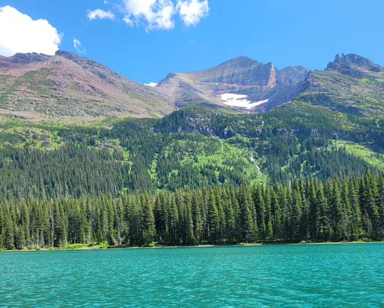 |
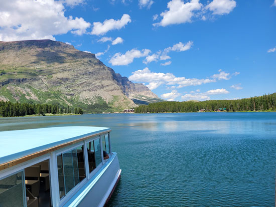 |
| We ran over a mile to reach the boat launch before the last boat left for
the day. We just barely made it! I wanted to ride because my feet were covered in blisters, Eric wanted to ride because we'd left Buddy in the car and we were starting to worry about him. |
The second ferry, heading over Swiftcurrent Lake toward the lodge, which you
can barely see in the center of this photo. |
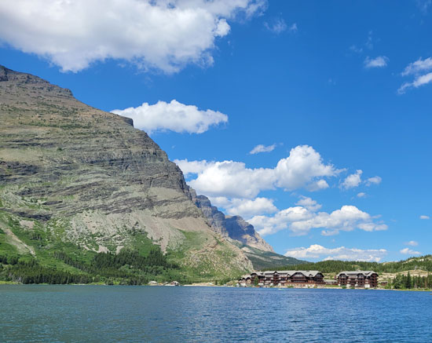 |
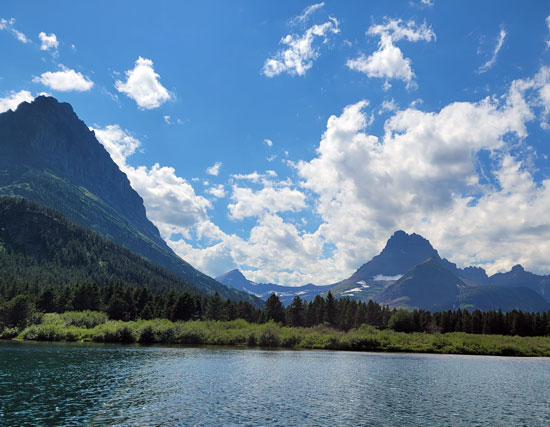 |
| A closer view of the lodge, nestled beneath the mountains. | Scenes from the boat ride. |
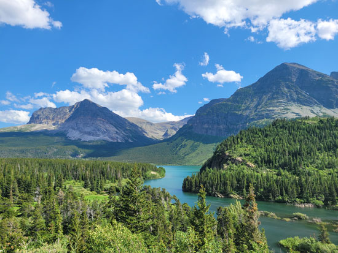 |
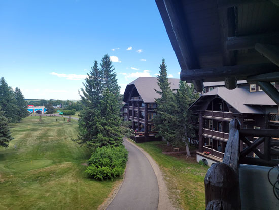 |
| On the drive out of the Many Glacier area. | Next up, a stop at East Glacier. We love this lodge and it's grounds, it's very beautiful. |
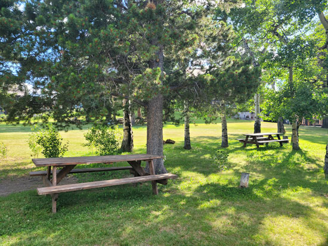 We took advantage of their nice picnic area to have a light supper. |
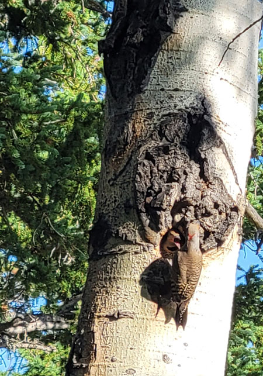 |
| Our entertainment was watching this mother woodpecker feeding her very demanding babies. | |
| We enjoyed one more night of camping in Hungry Horse, then headed for
home that next morning. It was a good trip. (I can say this now that my blisters have healed.) |
|